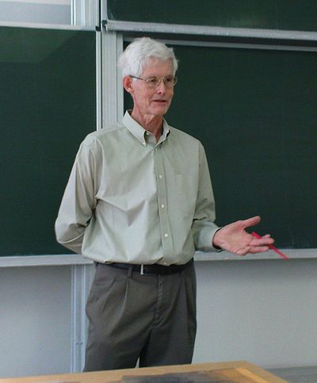

P vs. NP

P vs. NP är ett problem inom teoretisk datalogi och handlar om huruvida två klasser av beräkningsproblem, P och NP, är olika eller inte. Teorin har att göra med att generera kombinationer av ett begränsat antal ur en större urvalsgrupp, där vissa kombinationer är otillåtna. Detta kallas ett NP-problem. Att kontrollera om en genererad kombination är tillåten är enkelt. Att generera en kombination som är tillåten är däremot svårt på grund av att antalet möjligheter kan vara enormt. Det anses därför inte möjligt att man ens i framtiden ska kunna bygga datorer snabba nog att lösa dessa problem genom försök.
Problemet lyder:
NP är en icke-deterministisk och P en deterministisk turingmaskin. Finns det några beräkningsproblem som ligger i komplexitetsklassen NP, men inte i komplexitetsklassen P?
Det anses allmänt att svaret är ja. En stor klass beräkningsproblem har visats vara NP-fullständiga. Med NP-fullständigt menas att om det finns en polynomiell deterministisk algoritm för problemet, så finns en polynomiell deterministisk algoritm för alla problem i NP. Ett bevis för existensen av ett beräkningproblem som ligger i NP men inte i P skulle alltså innebära att inget NP-fullständigt problem ligger i P.
Foto: Wikipedia